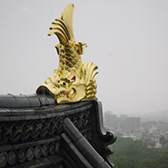
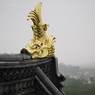
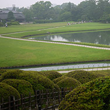
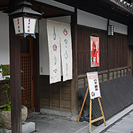
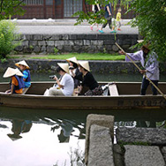

ミュンヘン中央駅
München Haubt Bahnhof ミュンヘン空港からリムジンバスが出ている。日本で事前にチケットを購入。
ミュンヘンの街の歩き方をご紹介します。

München Haubt Bahnhof ミュンヘン空港からリムジンバスが出ている。日本で事前にチケットを購入。

Hotel Luitpold 地球の歩き方にも載っている定評あるホテル。駅から近い。可愛らしいお部屋。
Auer Dult 毎年4月末〜5月初めにミュンヘンはマリアヒルフ教会広場で行われる。

Stephansdom お昼に行われるパイプオルガンコンサートでは世界最大級のパイプオルガンの生演奏を聴くことができる。

Super レジでは前の人との間に仕切りを置き、カゴから自分の買うものをベルトコンベアに乗せる。会計が済んだらマイバッグに自分で仕舞う。